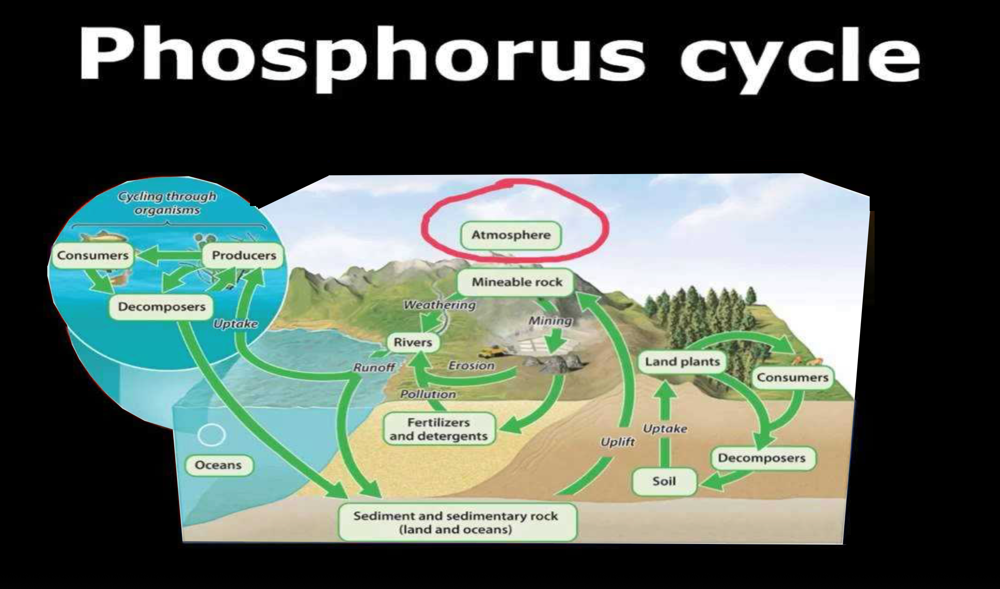

Overview: The biogeochemical cycle that describes the movement of phosphorus through the lithosphere (Earth's crust), hydrosphere (water), and biosphere (living organisms). Unlike the carbon and nitrogen cycles, the phosphorus cycle does not have a significant atmospheric component.
Key Processes & Reservoirs:
- Lithosphere (Rocks and Minerals): The primary long-term reservoir of phosphorus is in rocks and mineral deposits, often in the form of phosphate ions (PO₄³⁻).
- Weathering and Erosion: The slow breakdown of phosphate-containing rocks and minerals by physical and chemical weathering releases phosphate ions into the soil and water.
- Absorption by Plants: Plants absorb dissolved phosphate ions (PO₄³⁻) from the soil through their roots. This is the primary way phosphorus enters the biosphere.
- Assimilation by Animals: Animals obtain phosphorus by eating plants or other animals that have consumed plants. Phosphorus is essential for building DNA, RNA, ATP (energy currency), cell membranes (phospholipids), bones, and teeth.
- Decomposition: When plants and animals die, decomposers (bacteria and fungi) break down organic matter, releasing phosphate ions back into the soil. This process is called mineralization.
- Sedimentation and Uplift: In aquatic ecosystems, phosphate can precipitate out of the water and accumulate in sediments at the bottom of oceans, lakes, and rivers. Over long geological timescales, these sediments can be compressed and form phosphate-rich rocks. Geological uplift can then expose these rocks on land, making the phosphorus available again through weathering.
- Excretion: Animals release phosphorus in their waste products, which eventually decompose and return phosphorus to the soil or water.
- Leaching: Phosphate ions can be dissolved in water and transported through the soil to water bodies.
Diagram:

Key Differences from Carbon and Nitrogen Cycles:
- No significant atmospheric phase: Phosphorus primarily cycles through land and water.
- Slow process: The weathering of rocks is a slow process, making phosphorus availability a limiting factor in many ecosystems.
- Localized movement: Phosphorus tends to stay in soils and sediments and doesn't cycle globally through the atmosphere.
Human Impact:
- Mining of phosphate rocks: Used to produce fertilizers and detergents, significantly increasing the amount of phosphorus in the environment.
- Excessive use of phosphate fertilizers: Can lead to runoff into aquatic ecosystems, causing eutrophication (excessive algal growth that depletes oxygen levels). Phosphorus is the limiting nutrient in many aquatic ecosystems hense addition of phosphorus will cause algae population increase resulting in eutrophication.
- Discharge of wastewater: Sewage and industrial wastewater often contain high levels of phosphorus, contributing to water pollution.
- Deforestation: Can increase soil erosion, leading to the loss of phosphorus from terrestrial ecosystems.
Key Terms to Remember:
- Phosphate (PO₄³⁻)
- Weathering
- Absorption
- Assimilation
- Decomposition (Mineralization)
- Sedimentation
- Uplift
- Eutrophication
- Limiting nutrient
Written by Kasiban Parthipan